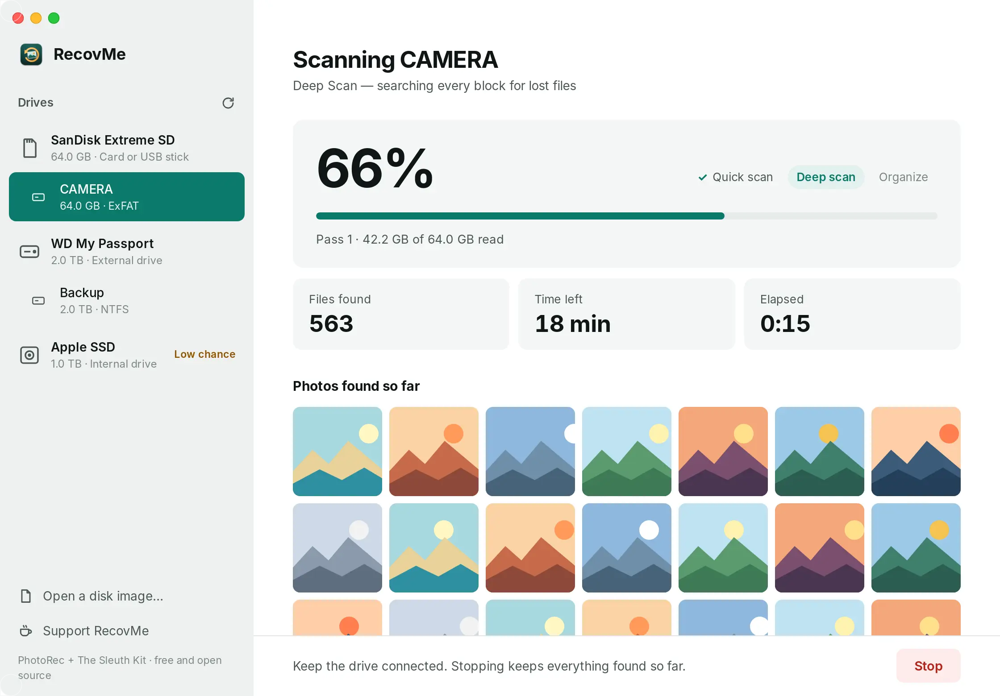
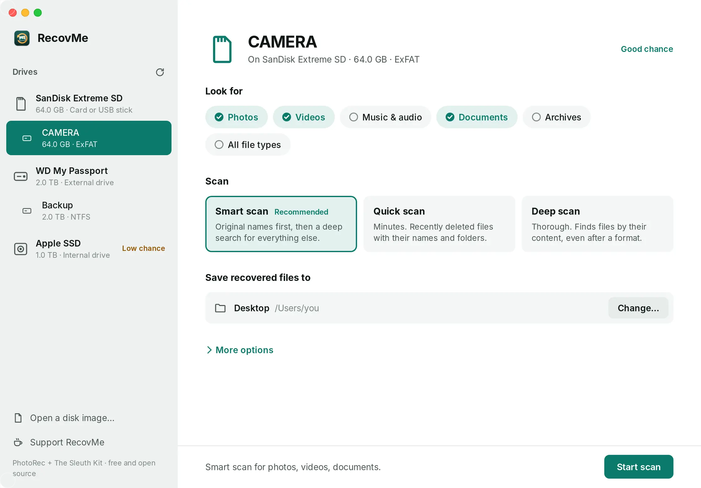
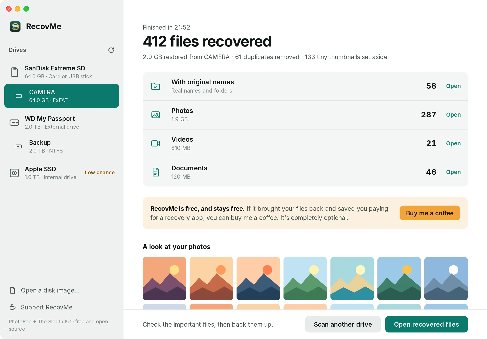

Get your photos back.
Free for Mac and Windows. RecovMe brings back deleted photos, videos and documents from SD cards, USB sticks and hard drives. No limits, no account, nothing leaves your computer.
Mac with Apple silicon, macOS 11 or later · Windows 10 or 11, 64-bit

What are your chances?
The kind of drive matters more than any software. Pick yours and what happened, and you get an honest answer before you download anything.
Three screens, start to finish.
Pick the drive, let it search, open your files. It takes care of the rest: sorting, naming and removing duplicates.

Pick the drive
Choose the card or disk, what to look for, and where to save. A different drive keeps your files safe.
Watch it search
Original names first, then a deep search of every block. Photos appear as soon as they are found. Stop anytime and keep what it has.

Open your files
Everything is sorted by type, with a button to open each folder and a short report of what was found.
Photos come back with their dates.
Files found by a deep search lose their names, so RecovMe reads the date each photo was taken and files it by month. Identical copies are removed and tiny thumbnails are set aside.
What it finds.
More than 480 file types, recognised by what is inside them, so they come back even after a format.
Photos
- JPG, HEIC, PNG, GIF
- RAW: CR2, CR3, NEF, ARW, DNG, RAF, ORF
- PSD, TIFF, WebP
Videos
- MP4, MOV, 3GP
- AVI, MKV, MTS, M2TS
- MPG, WMV, FLV
Music & audio
- MP3, M4A, AAC
- WAV, FLAC, OGG
- AIFF, WMA, AMR
Documents
- PDF, DOCX, XLSX, PPTX
- DOC, XLS, PPT, ODT
- TXT, RTF, PST mail
Archives
- ZIP, RAR, 7Z
- GZ, BZ2, XZ, TAR
- ISO, CAB
Works best on
SD and camera cards, USB sticks, external hard drives and the hard drive inside an older PC.
Hard for any app
SSDs inside laptops wipe deleted files on their own within minutes. Every Mac with Apple silicon also encrypts its drive. Use the Trash, Time Machine or OneDrive first.
Not for phones
iPhones and iPads don't let any app read deleted space. Recently Deleted, iCloud and computer backups are the way there.
Saved your photos?
Buy me a coffee.
RecovMe is free for everyone and stays free. If it brought your files back and saved you paying for a recovery app, a coffee helps keep it going. It is completely optional.

Prefer to help another way? Star it on GitHub or tell a friend who lost their photos.
Questions.
Is it really free?
Yes. There is no trial, no file limit and no paid version. RecovMe is open source, so anyone can check how it works. Donations are optional and change nothing in the app.
Can it damage my drive?
RecovMe only reads the drive you scan and refuses to save recovered files onto it, because writing there could overwrite what you want back. On a Mac it can also unmount the drive during the scan, so the system can't write to it either.
Why does my Mac ask for my password?
Reading deleted space needs direct access to the drive, which macOS only allows with your password. If a scan says it can't read the drive, allow RecovMe in System Settings, Privacy & Security, Full Disk Access.
Why does my computer warn me when I open it?
Mac and Windows warn about apps that aren't signed with a paid developer certificate yet. On a Mac, open System Settings, Privacy & Security and choose Open Anyway. On Windows, choose More info and then Run anyway.
The card was formatted. Is it too late?
Usually not. A quick format only clears the card's index. Turn on Search the whole drive under More options and run a Deep scan. File names may be lost, but photos come back named by the date they were taken.
Some recovered files won't open.
Parts of them were overwritten by newer files, or the file was stored in pieces. That is why it matters to stop using a drive straight away. Open the important files first and copy the good ones to a safe place.
Does it send my files anywhere?
No. Everything happens on your computer. RecovMe has no account, no cloud and no tracking.